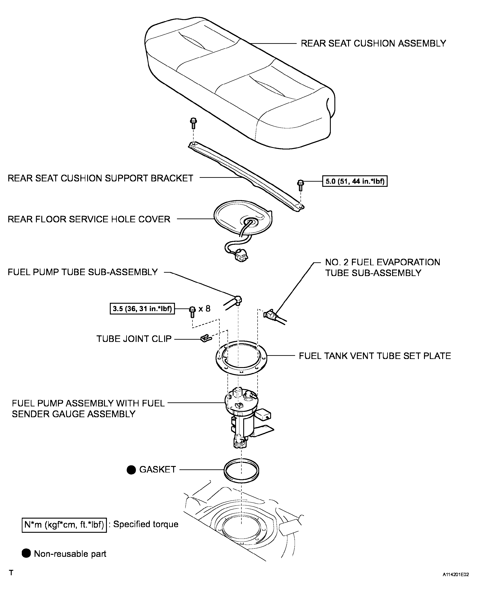
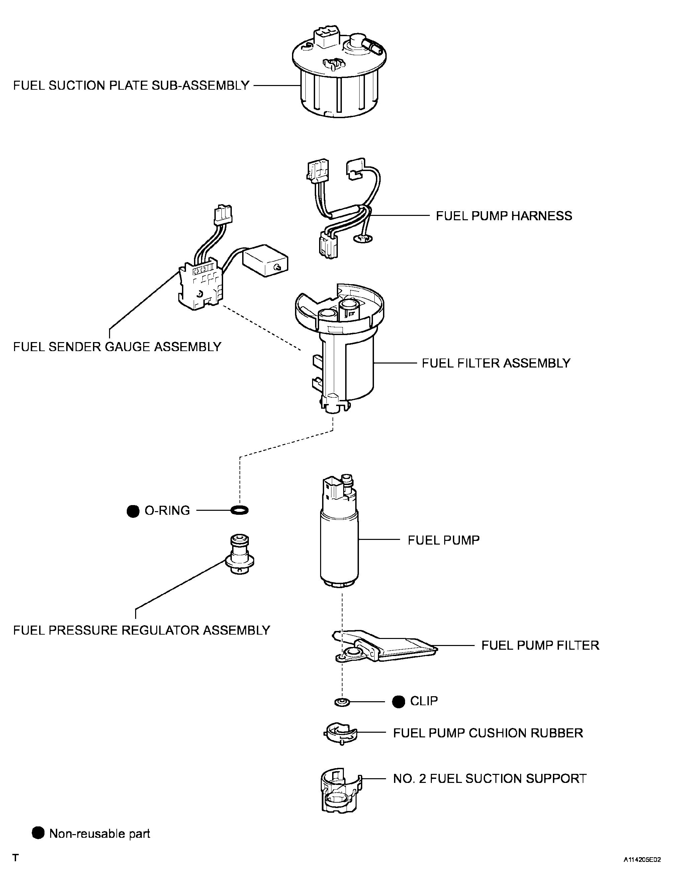

Home
>>
Scion
>>
2006
>>
xB Standard
>>
Repair and Diagnosis
>>
Engine Mechanical
>>
Fuel System
>>
Fuel (1NZ-FE)
>>
Fuel Pump
>>
Components
Fuel Pump: Components
Fig 1: Identifying Fuel Pump Components (1 Of 2)

Courtesy of © TOYOTA, LICENSE AGREEMENT TMS1002
Fig 2: Identifying Fuel Pump Components (2 Of 2)

Courtesy of © TOYOTA, LICENSE AGREEMENT TMS1002